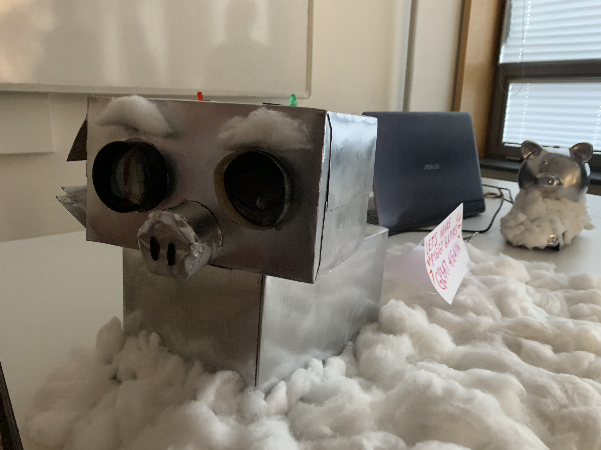
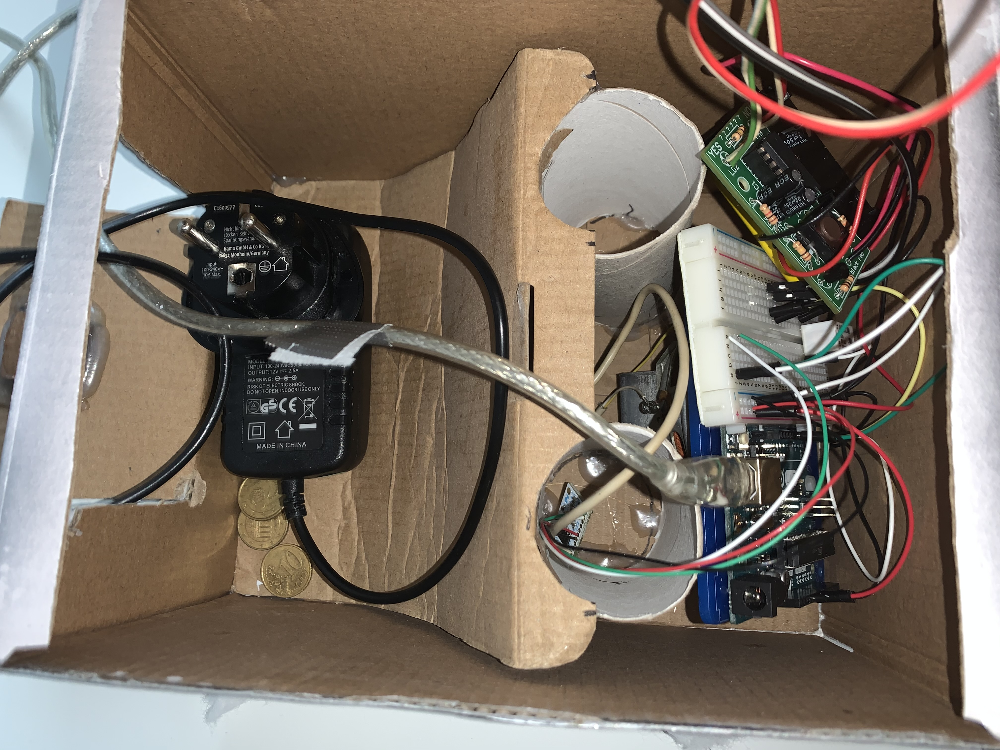

Reading Objects
Reading Objects is a Minor I did finished this year at THUAS. The course is about trying to design products not by focusing on functionality for the user, but by researching objects as users. This leads to a completly different perspective on design.
--SCHOOL PROJECT--
Objective
In this minor we had multiple objectives. My groups object was: "Piggy Banks". We had to do research and show that research in a film and we needed to make 3 (functioning) prototypes.
Result
We made a video (using animations) to show what was found in our research. The title of this video is: "Another Pig Bites the Dust". Take a look for yourself:
For the prototypes we decided to make 2 versions (so one of them received 2 iterations).
For the first protoype we wanted to empower the piggy. We did this by giving him wheels and essentially turning him into a RC piggy. Giving him the abilty to move and to have an opinion wether or not he wants your coin...
The second prototype turned out a bit more advanced since we did two iterations on it. We wanted to give it sensors so we wouldn't have to drive ourself. In order to do this I wanted to use an Arduino. Since I didn't have a lot of experience in this, I got myself a starter kit and just started fiddling with it. We figured out a way for the piggy to sense if a coin is put in and can then react accordingly. It even gave some advice!

